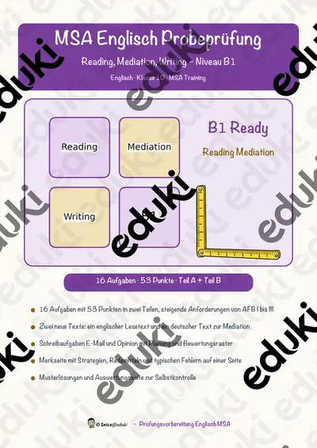
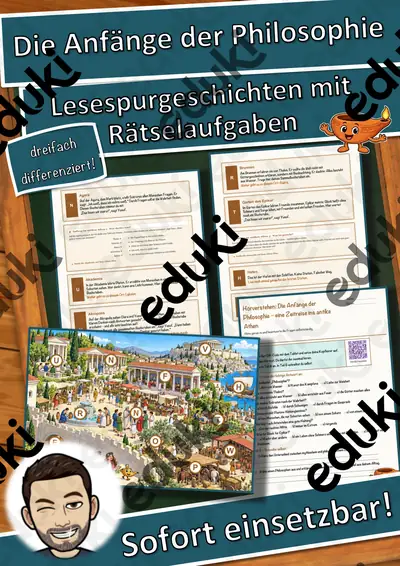

Street Art und Graffiti – Kunst im Stadtraum – Lesespurgeschichte mit Rätselaufgaben (Klasse 9)
Street Art und Graffiti – Kunst im Stadtraum – Lesespurgeschichte Kunst (Klasse 9)Begib dich mit deiner Klasse auf eine spannende Lesespur durch ein buntes Stadtviertel! Jonna und Lio machen eine Street-Art-Führung und fragen sich: Kunst oder Schmiererei? Am Stadtteilbüro erfahren sie, dass schon in Pompeji an Wände gekritzelt wurde, am Brückenpfeiler lernen sie Tags und die Anfänge des Writings in New York kennen, und an der Übungswand sehen sie, wie auf freigegebenen Flächen große Pieces entstehen. Im Hinterhof entdecken sie die Schablonentechnik, am Laternenmast Sticker und Paste-ups, an der Hausfassade ein riesiges Auftrags-Mural und am Parkgeländer Strickgraffiti und Reverse Graffiti. Am Rathausplatz geht es um die rechtliche Seite: Sprühen ohne Erlaubnis ist Sachbeschädigung. Ihre Schablone Stanzi ist immer dabei. Am Ende jedes Abschnitts verrät ein Hinweis den nächsten Ort auf dem Viertelplan – nur wer richtig liest und mitdenkt, findet den Weg und sammelt alle geheimen Buchstaben zum Lösungswort.
Die perfekte Lesespur für den KUNSTUNTERRICHT der 9. Klasse – ideal als Einstieg in das Thema Kunst im öffentlichen Raum: Sie verbindet motivierendes, sinnentnehmendes Lesen mit Fachwissen und einer kritischen Auseinandersetzung mit legalen und illegalen Formen. Das Material ist SOFORT EINSETZBAR und in DREI DIFFERENZIERUNGSSTUFEN (leicht ★ / mittel ★★ / schwer ★★★) angelegt.WICHTIG: Das komplette Material ist sowohl in FARBE als auch in SCHWARZ-WEISS enthalten – ideal zum Sparen von Druckkosten.DAS IST ENTHALTEN
- Lesespurgeschichte in 3 Niveaus (leicht, mittel, schwer)
- farbiger Viertelplan als Suchkarte
- Hörverstehen mit QR-Code zur MP3 (selbstständiges Hören mit Kopfhörern)
- vier Aufträge auf dem Weg: ein Verbinde-Rätsel, ein Quiz, eine Rechenaufgabe und ein Steckbrief
- Rätselseite (Wörter-Suchsel + Wissensfragen)
- Ausmalbild zum Thema
- ausführliches Lösungsblatt für die Lehrkraft
- alles zusätzlich als komplette Schwarz-Weiß-VarianteSO GEHT DIE LESESPURDie Jugendlichen lesen ab START, entnehmen dem Text einen Hinweis auf einen Ort im Stadtviertel, suchen ihn auf dem Plan und lesen bei dieser Station weiter. An jeder richtigen Station gibt es einen Sammelbuchstaben. Eingebaute Sackgassen (Waschsalon, Pizzeria, Fahrradladen, Gemüsestand) liegen zwar im Viertel, sind aber keine Stationen und dienen der Selbstkontrolle. Am Ende werden die gesammelten Buchstaben umgestellt und ergeben ein geheimes Lösungswort. (Die Lösungen sind selbstverständlich nur im Lösungsblatt für die Lehrkraft enthalten.)INHALTLICHER SCHWERPUNKTDie Jugendlichen ordnen Graffiti und Street Art historisch ein, unterscheiden Tag und Piece sowie Techniken wie Schablone, Sticker, Paste-up, Mural, Strickgraffiti und Reverse Graffiti, erfahren, dass Sprühen ohne Erlaubnis eine strafbare Sachbeschädigung ist, und lernen legale Wege kennen, eigene Entwürfe umzusetzen.ABGEDECKTER LEHRPLAN (Klasse 9, Kunst)
- Kunst (LehrplanPLUS Bayern) – Klasse 9 „Kunst im öffentlichen Raum“: Graffiti und Street Art historisch einordnen, Tag, Piece und Techniken wie Schablone, Paste-up, Mural und Strickgraffiti unterscheiden, legale und illegale Formen kritisch beurteilen und eigene Entwürfe verantwortungsvoll gestalten.
- Deutsch – Lesen mit Texten und Medien umgehen: Lesestrategien anwenden, Texten gezielt Informationen entnehmen, sinnentnehmend und selektiv lesen; Zuhören: einem Sachhörtext konzentriert folgen (Hörverstehen mit MP3).
- Mathematik – Rechnen im Sachzusammenhang.
- Fächerübergreifend / Kompetenzen: Rechtserziehung (Eigentum, Sachbeschädigung), Werteerziehung, genaues Lesen und Prüfen, kreatives Gestalten (Ausmalbild).
Geeignet für Freiarbeit, Stationenlernen, Vertretungsstunden, Wochenplan, Projekttage und Homeschooling. Klassenstufe 9 (differenziert einsetzbar auch in Klasse 8 und 10).
Ähnliche Materialien

Graffiti Lückentext mit Wortspeicher Hörverstehen und Suchsel

New York Lückentext mit Wortspeicher Hörverstehen und Suchsel

Pompeji Lückentext mit Wortspeicher Hörverstehen und Suchsel

Filzen, Sticken und Knüpfen – Lesespurgeschichte mit Rätselaufgaben (Klasse 3)

Hip-Hop – Rap, DJ und Beat – Lesespurgeschichte mit Rätselaufgaben (Klasse 9)

USB-Stick Lückentext mit Wortspeicher Hörverstehen und Suchsel

MSA Englisch Klasse 10 Probeprüfung: Reading, Mediation, Writing (B1) mit Lösungen
